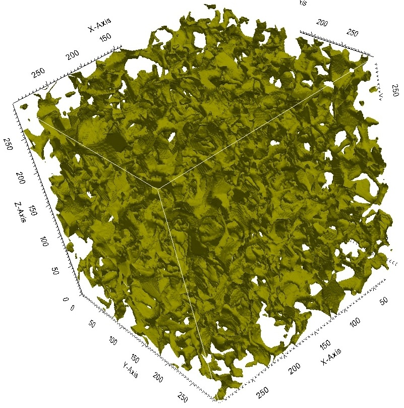
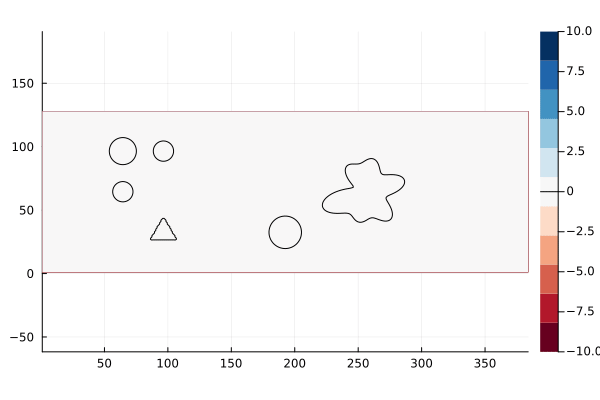

Simulation Visualizations
Below are visualizations from my simulations of fluid dynamics and instability phenomena. Each simulation represents a different aspect of my research.

Rayleigh-Taylor Instability (2024)
This simulation showcases the Rayleigh-Taylor instability, a phenomenon that occurs when a denser fluid is accelerated into a lighter fluid, causing the interface to become unstable. In this case, the Atwood number is 0.1, and the particle diameter is 0.05 μm. The result helps visualize multiphase mixing under weak instability.

Lid-driven cavity using lattice Boltzmann method (2021)
This simulation demonstrates a classic lid-driven cavity flow problem, where fluid inside a square cavity is driven by the motion of the top boundary (lid) while the other walls remain stationary. The flow develops primary and secondary vortices due to the shear forces generated by the moving lid. The simulation was performed using the Lattice Boltzmann Method (LBM), which is well-suited for simulating incompressible flows in confined geometries.

Flow in the Gas Diffusion Layer (PEM Fuel Cell)
This simulation visualizes pore-scale gas transport in the GDL of a PEM fuel cell. A Shan-Chen multiphase LBM model was used to capture water vapor interaction with the porous carbon material.

PIC Coupled with Compressible Euler (2022)
This simulation shows a Particle-in-Cell (PIC) method coupled with the compressible Euler equations in the deal.II C++ finite element library. It advances massless tracer tracking with explicit integration and momentum feedback.
Reference: deal.II step-68 Tutorial
Reference: deal.II step-68 Tutorial

Vorticity Field in a 2D Incompressible Flow (2025)
Vorticity field in a 2D incompressible flow (Re = 250, U = 1 cm/s) around several stationary obstacles, simulated using Julia with GPU acceleration (CUDA). The circular bodies induce complex vortex shedding and wake interactions as the uniform flow develops from left to right. Color contours represent vorticity, with blue and red indicating regions of clockwise and counterclockwise rotation, respectively.

Engine Cylinder Design and Analysis (2015)
A piston-cylinder assembly of the Mercedes-Benz OM355 diesel engine was modeled in SOLIDWORKS to analyze shear stress, deformation, and heat transfer due to combustion. This CAD model was used to evaluate mechanical integrity under thermal and pressure loads.